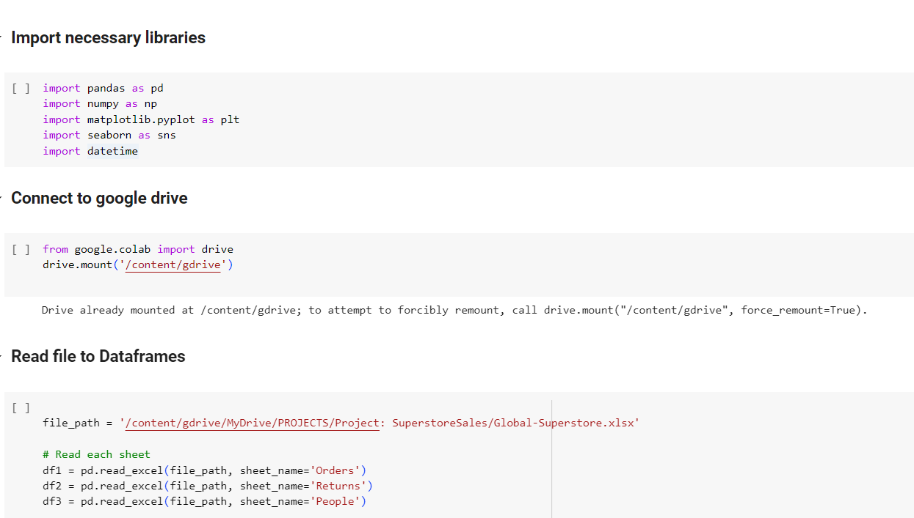
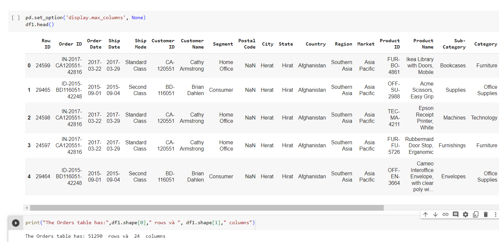
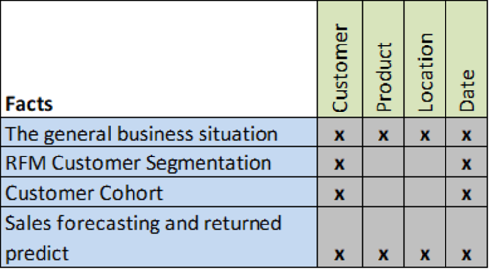
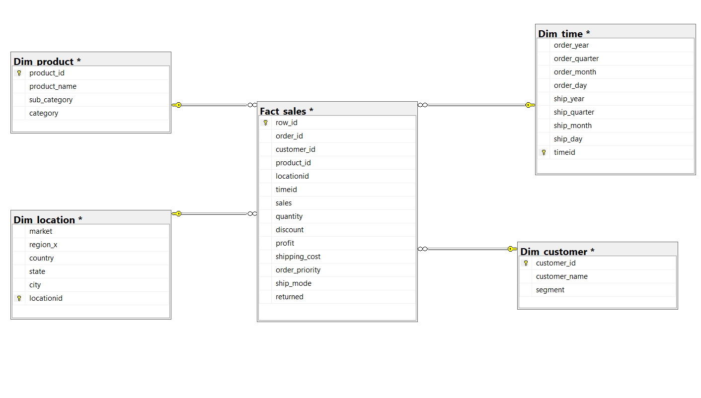
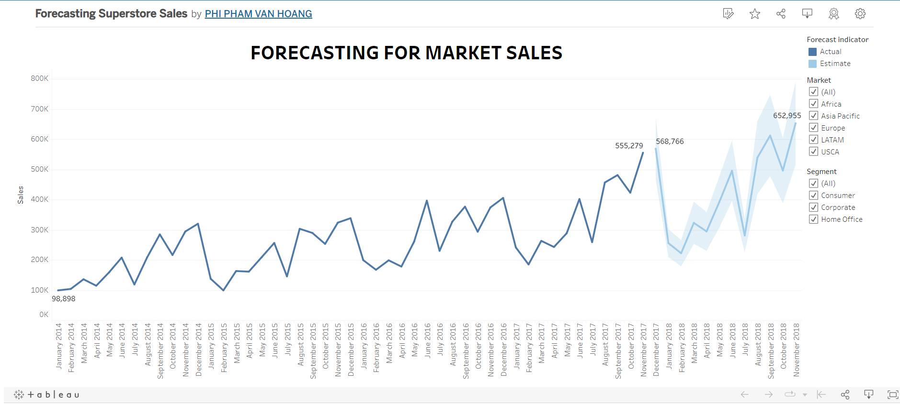
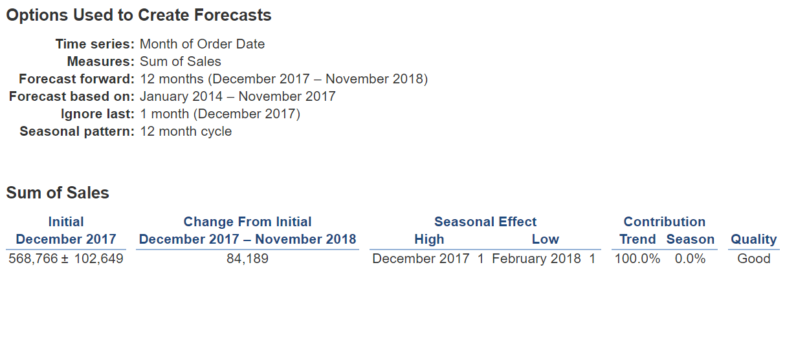
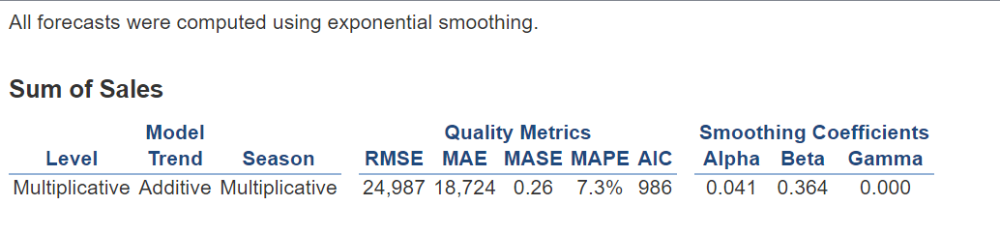
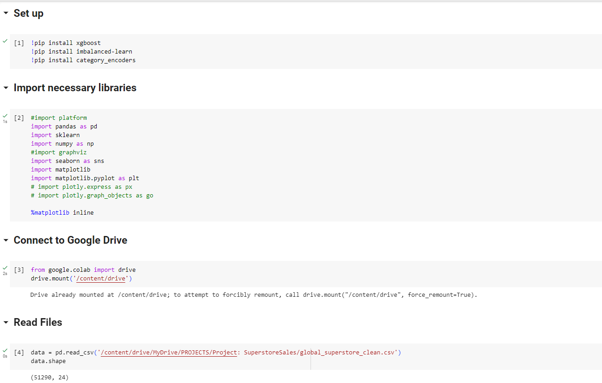
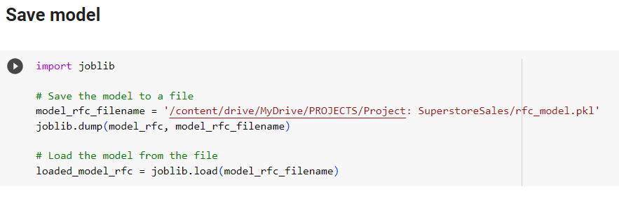

CONTENTS
- The Data Source
- Business Requirements
- Data Cleaning with Python in Google Colab
- Design Data Warehouse and ETL Process
- Fact 1: Analysis of the store's overall YTD business situation and sale metrics ( Using Power BI )
- Fact 2: RFM Customer Segmentation Analysis ( Using Power BI )
- Fact 3: Customer Cohort Analysis( Using SQL & Tableau )
- Fact 4: Forecasting and Predictive Returned Goods ( Using Tableau & Python )
This is a data set about a global store, recording customer transactions from 2014 to 2017 . This is an extremely complete sample data set for learning and practicing Business Intelligence and Analysis processes. This data set is in .xlsx file format and has 3 sheets: "Orders", "Returns" and "People", but in this project, I will only use 2 sheets, "Orders", "Returns".
Sheet: Orders
Sheet: Orders
Sheet: Returns
The Orders sheet has: 51290 rows and 24 columns
With columns: CustomerID, OrderDate, Market, Region, ProductID...
The Returned sheet has: 2034 rows and 3 columns
Returned, OrderID, Region...
Download dataset in my repository: Here
Analysis of the store's overall YTD business situation and sale metrics

RFM Customer Segmentation Analysis
Customer Cohort Analysis
Forecasting and Predictive model

Import neccessary libraries and read file:
Data overview:
df1.info()
df2.isnull().sum()
df1.duplicated().sum()
Unique Value
My Exploration
- Total Records: 51290 records.
- Total Columns: 24 columns.
- All columns with correct data type.
- There are 1 columns with null values: Postal Code with 41296 null values, so I will delete this field.
- All columns with correct data type.
- Some field like: Sales, Discounts,... need to be round
The Scripts of Cleaning
- Delete the Postal Code columns
- Rename all columns to lowercase and replace the space by underscore if exist
- Round number into 2 decimal
- Join sheet 2 "Return" to get the data about return goods
- Label for each Order ID: Yes by 1 and fill No by 0
- Sort the data by "Row_ID"
- Drop duplicated values if exist
Here is my code for cleaning in Python:
Data After Clean (with 51290 Records)
(Save it to new files)
Download the Data After Cleaning: Here
Bus Matrix of Sales
Data Warehouse
Dim Customer
Dim Product
Dim Time
Dim Location
Fact Sales
Download my ETL project in SSIS: Here

All Segment Overall YTD Business Situation
- Total YTD Sales: $4.30M and 26.25% increase over the previous year
- Total YTD Profits: $504.17K and 23.89% increase over the previous year
- Total YTD Quantity: 60.62K and 25.94% increase over the previous year
- Total YTD Profit Margin: 11.73% and 1.87% decrease over the previous year
- Technology products brought in the highest revenue last year (2017), followed by Furniture and finally Office Supplies
- Top 5 and Bottom 5 Product in the Dashboard
- Asia Pacific market brings the most revenue to the company and Africa market brings the least revenue for the company.

Segment: Consumer
- Total YTD Sales: $2.14M and 23.83% increase over the previous year
- Total YTD Profits: $257.68K and 23.63% increase over the previous year
- Total YTD Quantity: 30.84K and 25.37% increase over the previous year
- Total YTD Profit Margin: 12.03% and -0.16% decrease over the previous year
- Technology products brought in the highest revenue last year (2017), followed by Furniture and finally Office Supplies (Consumer)
- Top 5 and Bottom 5 Product in the Dashboard
- Asia Pacific market brings the most revenue to the company and Africa market brings the least revenue for the company. (Consumer)

Segment: Corperate
- Total YTD Sales: $1.29M and 21.47% increase over the previous year
- Total YTD Profits: $140.20K and 11.53% increase over the previous year
- Total YTD Quantity: 17.92K and 22.04% increase over the previous year
- Total YTD Profit Margin: 10.84% and -8.18% decrease over the previous year
- Technology products brought in the highest revenue last year (2017), followed by Furniture and Office Supplies (Corperate)
- Top 5 and Bottom 5 Product in the Dashboard
- Asia Pacific market brings the most revenue to the company and Africa market brings the least revenue for the company. (Corperate)

Segment: Home Office
- Total YTD Sales: $865.00K and 41.45% increase over the previous year
- Total YTD Profits: $106.29K and 46.01% increase over the previous year
- Total YTD Quantity: 11.86K and 34.00% increase over the previous year
- Total YTD Profit Margin: 12.29% and 3.22% decrease over the previous year
- Technology products brought in the highest revenue last year (2017), followed by Furniture and finally Office Supplies (Home Office)
- Top 5 and Bottom 5 Product in the Dashboard
- Asia Pacific market brings the most revenue to the company and Africa market brings the least revenue for the company. (Home Office)
Conclusion and Recommend Strategies:
1. Profit Optimization Strategy
- Assessment: The profit performance of all segments has increased this year compared to the previous year, except for a slight decrease in the overall profit margin. This might result from increased sales volume, but attention is needed to control pricing and costs to ensure sustainable profitability.
- Strategy: Optimize profit margins by adjusting pricing and controlling production costs. Ensure that the profit growth is not solely reliant on increased sales but also on improving price and cost management.
2. Focus on High-Growth Segments:
- Assessment: Both the "Consumer", "Corporate" and "Home Office" segments have shown significant growth in key metrics such as sales, profit, and quantity.
- Strategy: Concentrate on developing and providing products and services that cater to the needs of these segments. Build targeted marketing campaigns aimed at customers within these segments to increase market share and sales.
3. Product Portfolio Optimization:
- Assessment: Products categorized under "Technology" generated the highest revenue in the previous year, followed by "Furniture" and "Office Supplies" in 2017.
- Strategy: Adjust the product portfolio to optimize revenue. Consider investing in the development and promotion of high-profit-margin products, as well as assessing the optimization of underperforming products
4. Market Expansion and Risk Management:
- Assessment: "Asia Pacific" brought in the highest revenue, while "Africa" contributed the least.
Besides, the density of customers buying goods in Africa is high, but the revenue is small, this may come from the fact that in the African market, only low-value products can be sold.
The USCA market has a low density of buyers but contributes a large amount of revenue, proving that it can be sold here.- Strategy: Seize market expansion opportunities in regions like "Asia Pacific" to continue capitalizing on growth potential.
Simultaneously, consider ways to optimize business operations in markets contributing lower revenue to minimize risks.
Besides, The company should have marketing strategies in the USCA market to promote sales from this potential market
Conclusion and Recommend Strategies:
1. Promising (16.77%):
- Evaluation: Customers in this group show positive signs with relatively high potential.
- Strategy: Create special promotions or offers to encourage them to continue shopping and increase engagement with your brand.
2. New Customers (14.92%):
- Evaluation: This group consists of new customers, so it's important to retain them.
- Strategy: Send welcome promotions or special deals for their next purchase. Create a positive experience to encourage them to come back.
3. Cannot Lose Them (13.71%):
- Evaluation: This group has potential brand loyalty, but maintaining positive interaction is key.
- Strategy: Provide added value through new product information and loyalty programs. Ensure they always feel interested in your brand.
4. Champions (11.27%):
- Evaluation: These are exceptional customers who generate high profits.
- Strategy: Maintain a strong relationship by offering excellent customer service and exclusive benefits. Encourage them to refer others.
5. Loyal (7.21%):
- Evaluation: This group shows loyalty, but may need additional motivation to sustain it.
- Strategy: Offer special benefits and rewards to show appreciation for their loyalty.
6. About to Sleep (6.55%), Hibernating (7.96%), At Risk (5.24%)
- Evaluation: These groups are related to loss or potential loss.
- Strategy: Send promotional messages, update products, and services to rekindle their interest. Actively monitor and engage to retain them.
7. Lost Customers (9.73%):
- Evaluation: This group has the potential to develop into more positive customer segments.
- Strategy: Understand their needs and desires better to offer appropriate products and services.
8. Need Attention (2.07%):
- Evaluation: This group needs attention to prevent further loss.
- Strategy: Contact them directly to understand their issues and concerns, then provide suitable solutions.
Conclusion:
- Promising, New Customers, Cannot Lose Them: The total percentage of these groups is nearly 45%, indicating a potential and important customer set. The key strategy is to create and maintain positive relationships, create value, and make sure they don't lose points.
- Champions, Loyal: At about 18%, these are the groups that bring in stable profits. Strategy should focus on maintaining and driving positive interactions to maintain loyalty and increase revenue.
- About to Sleep, Hibernating, At Risk: These groups together make up about 20%, indicating a risk of losing points or stopping interaction. Strategy needs to focus on re-igniting interest and engagement so as not to lose customer points.
- Lost Customers: With more than 9%, this is a lost group, but there is still a chance to recover. Strategy should focus on restoring the relationship and motivating them to return.
- Potential, Need Attention: This group together makes up about 6%, representing growth potential and issues that need attention. Custom strategy is to dig deeper and provide solutions to exploit potential or solve problems.
In conclusion, based on the RFM analysis, the business should concentrate on customer retention, reactivating potential customers, strengthening interactions with valuable and potential segments, and developing engagement strategies to optimize business effectiveness and increase profitability.
Download my Dashboard about YTD Sales and Customer Segmentation: Here
SQL Analysis Scripts
Tableau Dashboard
View my Tableau Dashboard about Cohort Analysis: Here
Analysis:
1. Retention Rate Over Time:
- All customer groups from 2016 exhibited a consistent trend of decreasing numbers over the course of several months.
- Initial cohorts began with larger customer counts, but these figures gradually declined over time. This emphasizes the necessity for robust retention and customer acquisition strategies.
2. Engagement Patterns:
- There is significant variation in customer numbers across months and cohorts.
- Certain cohorts experienced an increase during specific periods followed by a decrease. This might reflect marketing campaigns or special events that generated temporary interest.
3. Churn Analysis:
- Early cohorts generally maintained lower churn rates compared to their later counterparts.
- As time progressed, churn rates tended to increase in subsequent cohorts, underlining the importance of strategies to prevent customer attrition.
4. Impact of Marketing Campaigns:
- Several cohorts experienced substantial spikes in customer counts after specific months, which could be linked to strategic marketing campaigns or captivating events.
- This underlines the efficacy of well-timed and thoughtfully executed marketing endeavors, showcasing their potential to generate transient enthusiasm and engagement among customers.
Strategies Recommend:
- Segmented Retention Campaigns: Tailor retention campaigns based on customer behavior and engagement patterns observed within different cohorts. Offer personalized incentives and rewards to re-engage customers who show signs of waning interest.
- Loyalty Programs: Introduce or enhance loyalty programs that offer exclusive benefits to long-standing customers. This could help counteract the increasing churn rates observed in later cohorts.
- Seasonal Promotions: Leverage the identified seasonal trends by launching targeted promotional campaigns during off-peak months. Encourage customers' participation with limited-time offers or themed events.
- Reactivation Campaigns: Develop strategies to win back customers who have churned, especially focusing on the early cohorts with lower churn rates. Offer enticing incentives or personalized communications to reignite their interest.
- Continuous Engagement Events: Organize periodic engagement events or product launches to sustain customer excitement throughout the year. This can help counteract the cyclical decline in engagement.
Forecasting in Tableau
 View my Tableau Dashboard about Forecasting Sales: Here
Forecast Model with Trend is Additive and Season is Multiplicative, I got the good result that MASE = 0.26.
That proves the model is well chosen with the data.
Predictive Model for Returned Good
Set up and Read file
EDA Data
In my dataset, there are 3 types of data:
Object Data type Numeric Data type Datetime Data type
Feature Selection
Categorical Feature
Categorical Features : will be selected from the Object data type columns.
First, delete unused fields such as: order_id, customer_id, customer_name, product_id. In 5 features: city, state, country, region_x, market, select market field as market and drop the remaining fields In 3 fields: product_name, sub_category, category, select category field as category and drop the remaining fields.
Numerical Feature
In this project, the datetime feature is order_date and ship_date, corresponding to purchase date and delivery date.
It can be assumed that items with a large difference between the order date and the ship date will result in returns.
Therefore, from order_date and ship_date will generate a new feature called date_diff: the difference between order_date and ship_date
Numerical Features : will be selected from the Numeric data type columns.
Delete unused fields such as: row_id date_diff is a numerical feature
Target Feature
The target feature in this project is returned
Outlier Detection for numerical feature
- Count of lower outliers in sales: 0
- Count of upper outliers in sales: 5655
- Count of upper outliers in quantity: 877
- Count of upper outliers in discount: 4172
- Count of lower outliers in profit: 3526
- Count of upper outliers in profit: 6229
- Count of upper outliers in shipping_cost: 5909
- No outliers in date_diff
There are lots of outlier in numerical feature. So it is necessary to tranform!
Transofmation with Log Transofmation
Encoder for Categorical feature
Final Dataset
Final Dataset
Split to Train and Test
Upsampling with SMOTE and Min max Scaler
XGBoost Model Training
XGBoost Mectrics
XGBoost confusion matrix
Random Forest Classifier Training
Random Forest Classifier Mectrics
Random Forest Classifier confusion matrix
Support Vector Classifier
Support Vector Classifier Mectrics
Support Vector Classifier confusion matrix
Model Evalutation

The "Random Forest Classifier Model" has the highest accuracy on the test dataset (Accuracy = 85.19%) and the F1-score is relatively better than the other models.
So I will choose this model!
Save Model
View my full project: Here